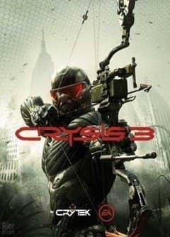

Год выпуска: 2013 г.
Жанр: От первого лица, 3Д, Экшен, Шутер
Разработчик: Crytek
Издательство: Electronic Arts
Платформа: PC
Тип издания: RIP
Язык интерфейса: Русский, Английский
Язык озвучки: Русский, Английский
Таблетка: Вшита (3DM v2, RELOADED)
Описание игры:
Crysis 3 продолжает знаменитую серию шутеров от Crytek. Действие игры разворачивается в 2047 году, а вам предстоит выступить в роли Пророка. Он возвращается в Нью-Йорк, где узнает о том, что город находится под куполом Nanodome, который был создан корпорацией C.E.L.L. Жителям сообщают, что Nanodome необходим для их защиты и очистки метрополисов от последних цефов, однако, на самом деле, его строительство является частью тайной операции по захвату технологий ради мирового господства. Надев усовершенствованный нанокостюм и вооружившись смертоносным луком и разрушительными инопланетными технологиями, Пророку предстоит помешать коварным планам C.E.L.L. и уничтожить оставшихся пришельцев. Особенности CRYSIS на pc: Семь Чудес городских джунглей. Нью-Йорк Сити накрыт гигантским нанокуполом и превращен в уникальные джунгли с семью различными средами обитания. Управляйте 'песочницей', превратите ее в свою собственную охотничью зону.
Анализ, Адаптация и Атака. Высоко оцененный критиками Crysis возвращается снова с более открытыми уровнями, на которых игроки могут выбирать свой путь и личный стиль игры. Усовершенствованный нанокостюм позволяет применять грубую силу или маскировку, всегда предоставляя игроку возможность выбора разных вариантов.
Самый крупный и самый взрывной арсенал за всю историю игры. В дополнение к арсеналу огнестрельного оружия, в Crysis 3 вы получите возможность подбирать оружие инопланетян и использовать новый лук.
Эволюция CryENGINE
CryENGINE разбудил мощь креативной группы Crytek, предоставляя вам ошеломляющее визуальное разнообразие игрового процесса.
Cистемные требования:
Минимальные требования
Операционная система
Windows Vista (SP2), Windows 7 (SP1) или Windows 8
Процессор
2,4 ГГц Intel Core 2 Duo или 2,7 ГГц AMD Athlon 64X2
Видеокарта
1 Гб
Оперативная память (Гб)
2 Гб (3 Гб для Windows Vista)
Рекомендуемые требования
Операционная система
Windows Vista (SP2), Windows 7 (SP1) или Windows 8
Процессор
2,4 ГГц Intel Core 2 Duo или 2,7 ГГц AMD Athlon 64X2